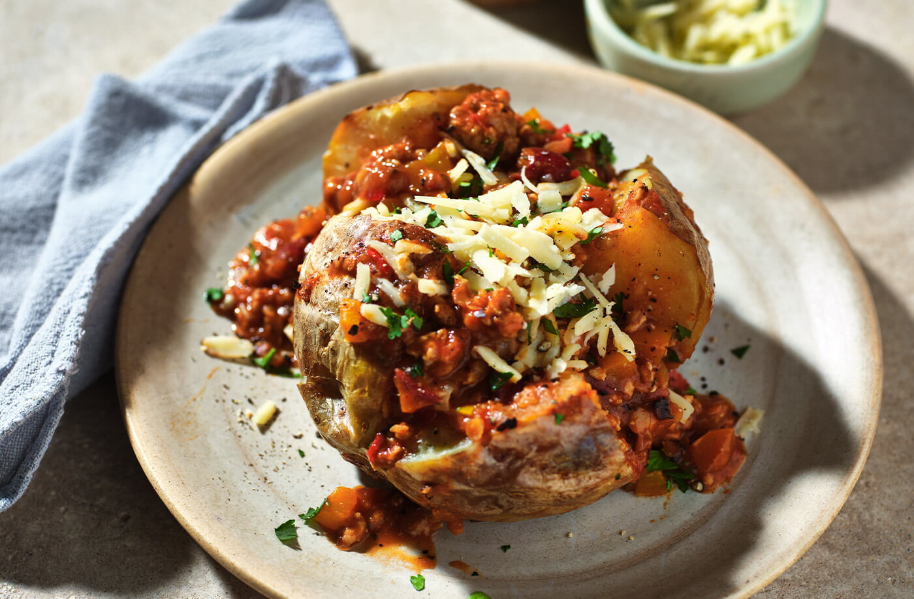

приготовление:
-
Разогреть в глубокой сковороде немного растительного масла на среднем огне. Добавить 500 г говяжьего фарша и обжаривать около 10 минут, постоянно помешивая и разбивая комочки, пока мясо не подрумянится. Переложить фарш на тарелку.
-
Разогреть духовку до 200 °C.
-
В той же сковороде обжарить мелко нарезанную 1 крупную или 1,5 средней луковицы. Добавить нарезанные 1 красный сладкий перец, 1 крупный или 2 небольших перца чили и измельчённые 2–3 зубчика чеснока. Готовить около 5 минут, помешивая.
-
Добавить 2 ст. л. томатной пасты и готовить ещё 2 минуты. Всыпать 1 ч. л. молотого кумина, 1 ч. л. орегано и 1,5 ч. л. копчёной паприки, затем перемешать.
-
Вернуть в сковороду обжаренный фарш, добавить 1 банку консервированных томатов (400 г) и влить 400 мл бульона. Перемешать и тушить на слабом огне 45–60 минут, периодически помешивая.
-
Пока готовится чили, запечь в духовке картофель в мундире до мягкости.
-
Слить жидкость из 1 банки красной фасоли. Добавить фасоль и 2 кусочка тёмного шоколада в чили, перемешать и прогреть ещё 5 минут. Попробовать, при необходимости посолить, снять с огня и вмешать нарезанную свежую кинзу.
-
Выложить запечённую картофелину на тарелку, разрезать и раскрыть. Сверху добавить чили кон карне и подать со сметаной.